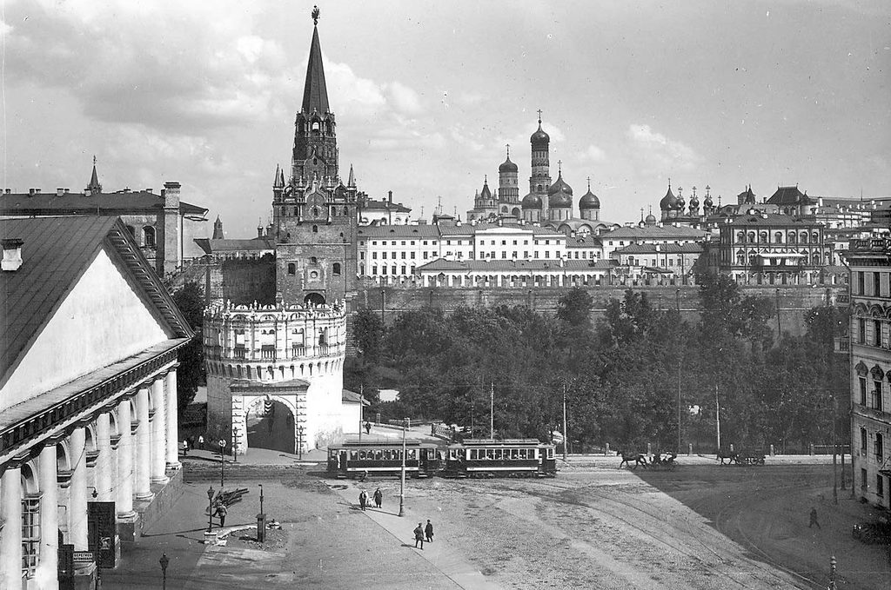

История города

Исто́рия Москвы́ — крупнейшего города и столицы России — насчитывает, по крайней мере, 878 лет. Первое письменное упоминание о Москве относится к 1147 году. Археологические работы, проведённые в районе Кремля, свидетельствуют, что в XI веке на этом месте уже существовало поселение, защищённое валом и рвом, что позволяет отнести его к категории городских. Благодаря своему положению на реке Москве, город играл важную историческую роль как экономический и политический центр.
Важные события
- 1147, 4 апреля — Первое летописное упоминание о Москве.
- 1157-1174 — Правление владимиро-суздальского князя Андрея Боголюбского, сына Юрия Долгорукого. Князь Андрей переносит в свой северный удел во Владимир старинную икону Божией Матери, присланную из Константинополя. В будущем она прославится как Владимирская икона
- 1238 — Батый сжигает Москву.
- 1323 — Митрополит Петр переносит митрополию (церковную столицу) из Владимира в Москву.
- 1330 — Возведение собора Спаса на Бору в Кремле и основание при нем Спасского монастыря.
- 1382 — Разорение Москвы Тохтамышем
- 1395 — Избавление Москвы от нашествия Тамерлана, благодаря чудесной помощи Владимирской иконы Божией Матери, принесенной в город.
- 1448 — Впервые на Руси митрополит Иона возведен в высший церковный сан Собором русских епископов без участия Вселенского Константинопольского патриарха.
- 1474 — Известие о землетрясении в Москве и разрушение недостроенного Успенского собора.
- 1478 — Иван III отказывается выплатить Золотой Орде дань за десять лет и разрывает ханскую грамоту, которая подтверждала главенство Орды над Русью.
- 1480 — Нашествие на Русь хана Ахмата. Ему навстречу из Москвы, после молебна перед Владимирской иконой в Успенском соборе, выводит войско великий князь Иван III. Стояние на реке Угре русских и татар заканчивается тем, что войска расходятся без боя. Конец татаро-монгольского ига на Руси (чудо от Владимирской иконы Божией Матери, второе празднование - 23 июня).
- 1510 — Падение Пскова и присоединение его к Московскому государству. Псковский вечевой колокол установлен на Ивановской колокольне.
- 1571 — Разорение Москвы крымским ханом Девлет Гиреем. От пожара уцелел только Кремль.
- 1586-1593 — Возведение каменных стен Белого города (линия сегодняшнего Садового кольца).
- 1589, 23 января — Учреждение патриаршества. Избрание первого русского патриарха Иова.
- 1610-1612 — Москва в руках поляков.
- 1612, 4 ноября — Народное ополчение Минина и Пожарского освобождает Москву. В память избавления от поляков в этот день совершался ежегодный крестный ход из кремлевских соборов в Казанский собор на Красной площади.
- 1625 — Над Спасскими воротами сооружена башня с курантами
- 1654-1655 — Церковная реформа патриарха Никона. Начало церковного раскола.
- 1662 — Медный бунт в Москве.
- 1698 — Последний стрелецкий бунт. Казнь стрельцов на Красной площади и уничтожение стрелецкого войска.
- 1700, июнь — Большой пожар в Кремле. Разбился большой Успенский колокол, предшественник Царьколокола, висевший на Филаретовской пристройке.
- 1713 — Перенесение столицы из Москвы в С.-Петербург.
- 1737 — Троицкий пожар, один из самых опустошительных за всю историю. Сгорела почти вся Москва и Кремль. Царь-колокол, находившийся в отливочной яме, треснул.
- 1755 — Основание первого в России Московского университета (в здании Земского приказа на месте нынешнего Исторического музея на Красной площади)
- 1771, июнь — Чумной бунт в Москве. Убийство толпой архиепископа Амвросия в Донском монастыре.
- 1773-1775 — Пугачевский бунт. Казнь Пугачева на Болотной площади.
- 1812, сентябрь — Войска Наполеона занимают Кремль. Смотр-парад французских войск на Красной площади. Начало московских пожаров.
- 1812, 11 октября — Уход Наполеона из Москвы и попытки взорвать Кремль. Большинство храмов и башен удается спасти. В память об освобождении Москвы ежегодно 12 октября или в ближайшее к этому дню воскресенье совершался крестный ход из всех московских соборов вокруг Кремля.
- 1813-1826 — Восстановительные работы в Кремле.
- 1908, апрель — Последнее крупное наводнение в Москве, на Пасху.
- 1918, 12 марта — Москве возвращена роль столицы государства. Переезд советского правительства в Кремль и закрытие его для посещения. Прекращение богослужений в храмах.
- 1941, 5-6 декабря — Начало контрнаступления советских войск под Москвой. Разгром немецких войск под Москвой.